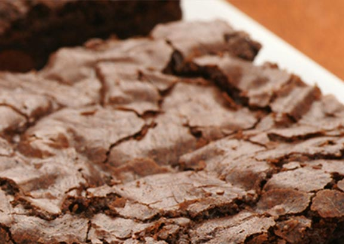

Easy Sour Cream Brownies!!!
Ingredients
- 1/2 cup Butter, melted
- 1 cup sugar
- 1 tsp vanilla
- 2 whole eggs (allow to come to room temperature)
- 1/2 cup flour
- 1/3 cup cocoa
- 1/4 tsp baking powder
- 1/4 tsp salt
- 1/2 cup Sour Cream
Preparation
- Preheat the oven to 350o F. Grease 8-in. square pan.
- In large mixing bowl blend butter, sugar and vanilla. Beat in room-temperature eggs.
- Using a spoon, mix in sour cream. Combine flour, cocoa, baking powder and salt.
- Stir dry ingredients mix into wet mix.
- Bake 35 minutes, check and possibly bake 5-10 minutes more.
- Cool for 10 – 15 minutes.
View the original recipe online
Contact Me
Send me an email!
University of Montana
32 Campus Drive
Missoula, MT 59812